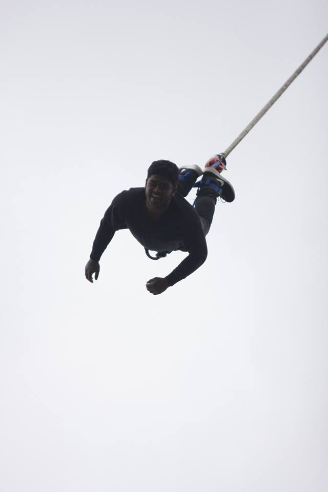
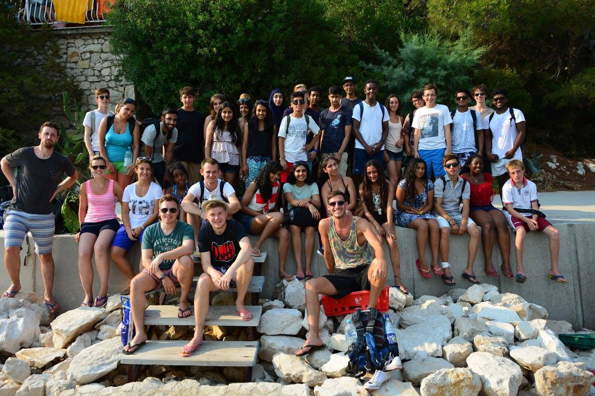

Biography
Allie considers himself to be quite thrill seeking, this is evident where he had taken part in a sponsored bungee jump in order to raise funds for a charity trip to Bosnia. He has engaged in a variety of charity work ranging from food drives to visting
orphanages and engaging with the children in the orphanage.

Further to this Allie has always been engaged actively in computers and technology always wanting to get the newest gadgets when they are released. Computers are something that he loves and has built his own computer from scratch when he was 16. This
passion for computers began a few years back when Allie had visited Intel for a day. Here he saw all the tests that computers and hardware were put through to ensure that they are able to function whilst going through changing weather and
environmental conditions. He always wanted to pursue a career in the computing field and is currently studying for a degree in Network Engineering. He believes that this is the path that will lead him to a successful career in the computing
industry.
About myself
I am a current student at the University of Northampton and undertaking a degree in Network Engineering. With this I hope to become an engineer or support staff for a networking company. I also have basic understanding of programming languages such as
HTML and CSS. Aside from my passion for computers I also wish to build upon my expriences such as continuing with the charity work that I have done in the past and taking part in more thrill seeking activities.
